#> Warning: This tutorial was written with Giotto version 0.3.6.9046, your version
#> is 1.0.0.This is a more recent version and results should be reproduciblelibrary(Giotto) # 1. set working directory results_folder = '/path/to/directory/' # 2. set giotto python path # set python path to your preferred python version path # set python path to NULL if you want to automatically install (only the 1st time) and use the giotto miniconda environment python_path = NULL if(is.null(python_path)) { installGiottoEnvironment() }
Dataset explanation
10X genomics recently launched a new platform to obtain spatial expression data using a Visium Spatial Gene Expression slide.
The Visium brain data to run this tutorial can be found here
Visium technology:
High resolution png from original tissue:
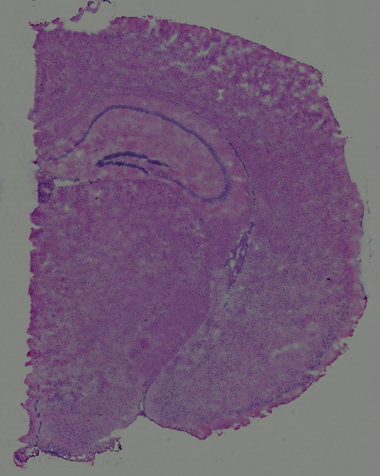
Part 1: Giotto global instructions and preparations
## create instructions instrs = createGiottoInstructions(save_dir = results_folder, save_plot = TRUE, show_plot = FALSE) ## provide path to visium folder data_path = '/path/to/Brain_data/'
part 2: Create Giotto object & process data
## directly from visium folder visium_brain = createGiottoVisiumObject(visium_dir = data_path, expr_data = 'raw', png_name = 'tissue_lowres_image.png', gene_column_index = 2, instructions = instrs) ## update and align background image # problem: image is not perfectly aligned spatPlot(gobject = visium_brain, cell_color = 'in_tissue', show_image = T, point_alpha = 0.7, save_param = list(save_name = '2_a_spatplot_image'))

# check name showGiottoImageNames(visium_brain) # "image" is the default name # adjust parameters to align image (iterative approach) visium_brain = updateGiottoImage(visium_brain, image_name = 'image', xmax_adj = 1300, xmin_adj = 1200, ymax_adj = 1100, ymin_adj = 1000) # now it's aligned spatPlot(gobject = visium_brain, cell_color = 'in_tissue', show_image = T, point_alpha = 0.7, save_param = list(save_name = '2_b_spatplot_image_adjusted'))

## check metadata pDataDT(visium_brain) ## compare in tissue with provided jpg spatPlot(gobject = visium_brain, cell_color = 'in_tissue', point_size = 2, cell_color_code = c('0' = 'lightgrey', '1' = 'blue'), save_param = list(save_name = '2_c_in_tissue'))

## subset on spots that were covered by tissue metadata = pDataDT(visium_brain) in_tissue_barcodes = metadata[in_tissue == 1]$cell_ID visium_brain = subsetGiotto(visium_brain, cell_ids = in_tissue_barcodes) ## filter visium_brain <- filterGiotto(gobject = visium_brain, expression_threshold = 1, gene_det_in_min_cells = 50, min_det_genes_per_cell = 1000, expression_values = c('raw'), verbose = T) ## normalize visium_brain <- normalizeGiotto(gobject = visium_brain, scalefactor = 6000, verbose = T) ## add gene & cell statistics visium_brain <- addStatistics(gobject = visium_brain) ## visualize spatPlot2D(gobject = visium_brain, show_image = T, point_alpha = 0.7, save_param = list(save_name = '2_d_spatial_locations'))
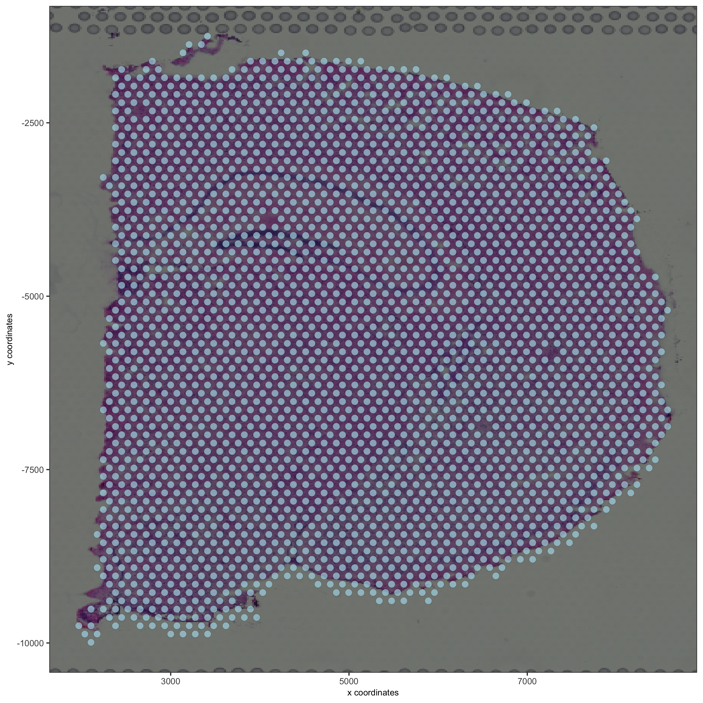
spatPlot2D(gobject = visium_brain, show_image = T, point_alpha = 0.7, cell_color = 'nr_genes', color_as_factor = F, save_param = list(save_name = '2_e_nr_genes'))
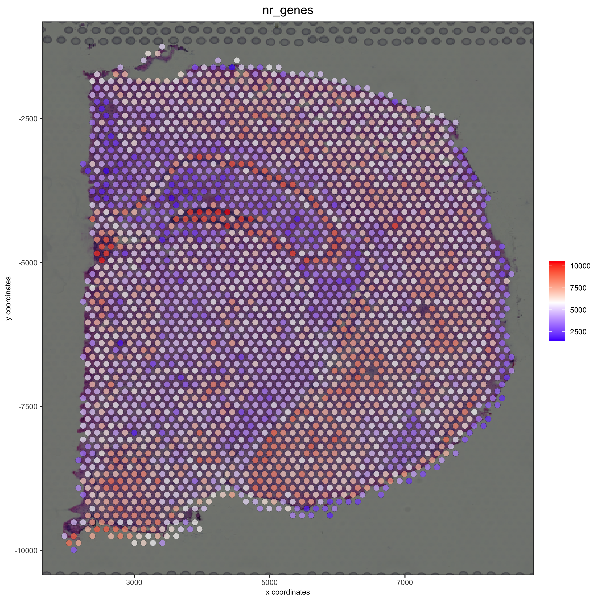
part 3: dimension reduction
## highly variable genes (HVG) visium_brain <- calculateHVG(gobject = visium_brain, save_param = list(save_name = '3_a_HVGplot'))
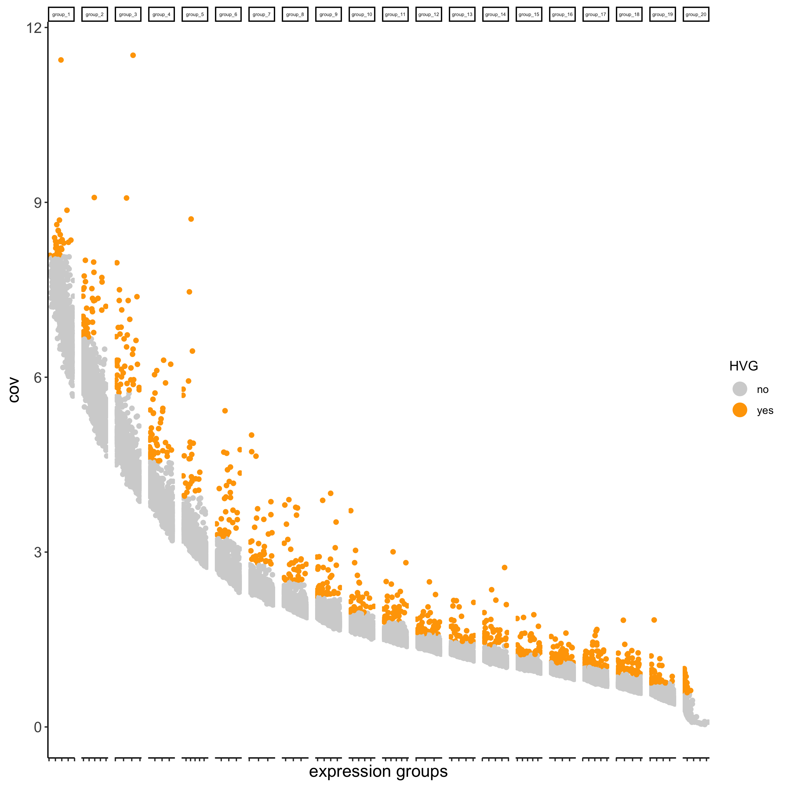
## run PCA on expression values (default) gene_metadata = fDataDT(visium_brain) featgenes = gene_metadata[hvg == 'yes' & perc_cells > 3 & mean_expr_det > 0.4]$gene_ID visium_brain <- runPCA(gobject = visium_brain, genes_to_use = featgenes, scale_unit = F, center = T, method="factominer") screePlot(visium_brain, ncp = 30, save_param = list(save_name = '3_b_screeplot'))


## run UMAP and tSNE on PCA space (default) visium_brain <- runUMAP(visium_brain, dimensions_to_use = 1:10) plotUMAP(gobject = visium_brain, save_param = list(save_name = '3_d_UMAP_reduction'))
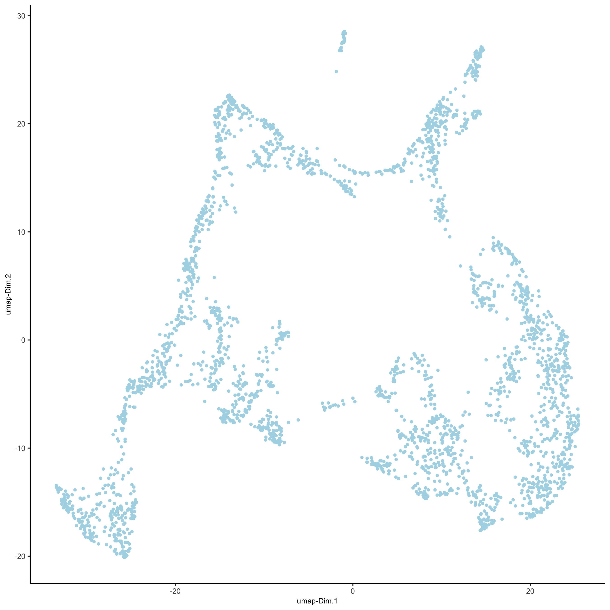
visium_brain <- runtSNE(visium_brain, dimensions_to_use = 1:10) plotTSNE(gobject = visium_brain, save_param = list(save_name = '3_e_tSNE_reduction'))
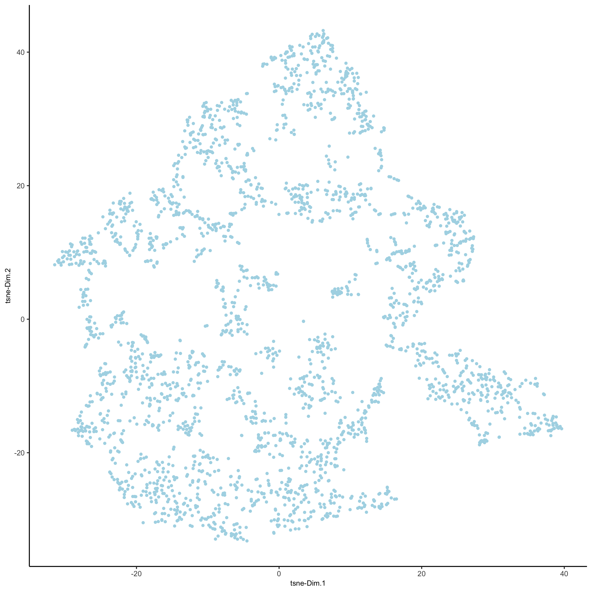
part 4: cluster
## sNN network (default) visium_brain <- createNearestNetwork(gobject = visium_brain, dimensions_to_use = 1:10, k = 15) ## Leiden clustering visium_brain <- doLeidenCluster(gobject = visium_brain, resolution = 0.4, n_iterations = 1000) plotUMAP(gobject = visium_brain, cell_color = 'leiden_clus', show_NN_network = T, point_size = 2.5, save_param = list(save_name = '4_a_UMAP_leiden'))
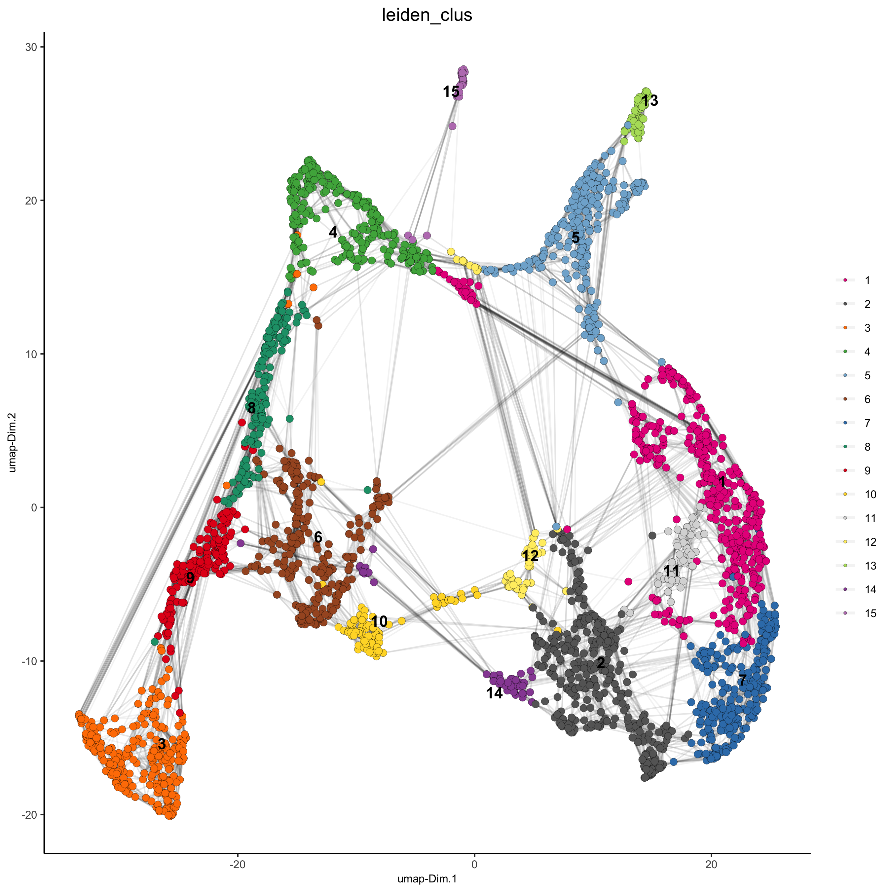
part 5: co-visualize
5.1 whole dataset
# expression and spatial spatDimPlot(gobject = visium_brain, cell_color = 'leiden_clus', dim_point_size = 2, spat_point_size = 2.5, save_param = list(save_name = '5_a_covis_leiden'))
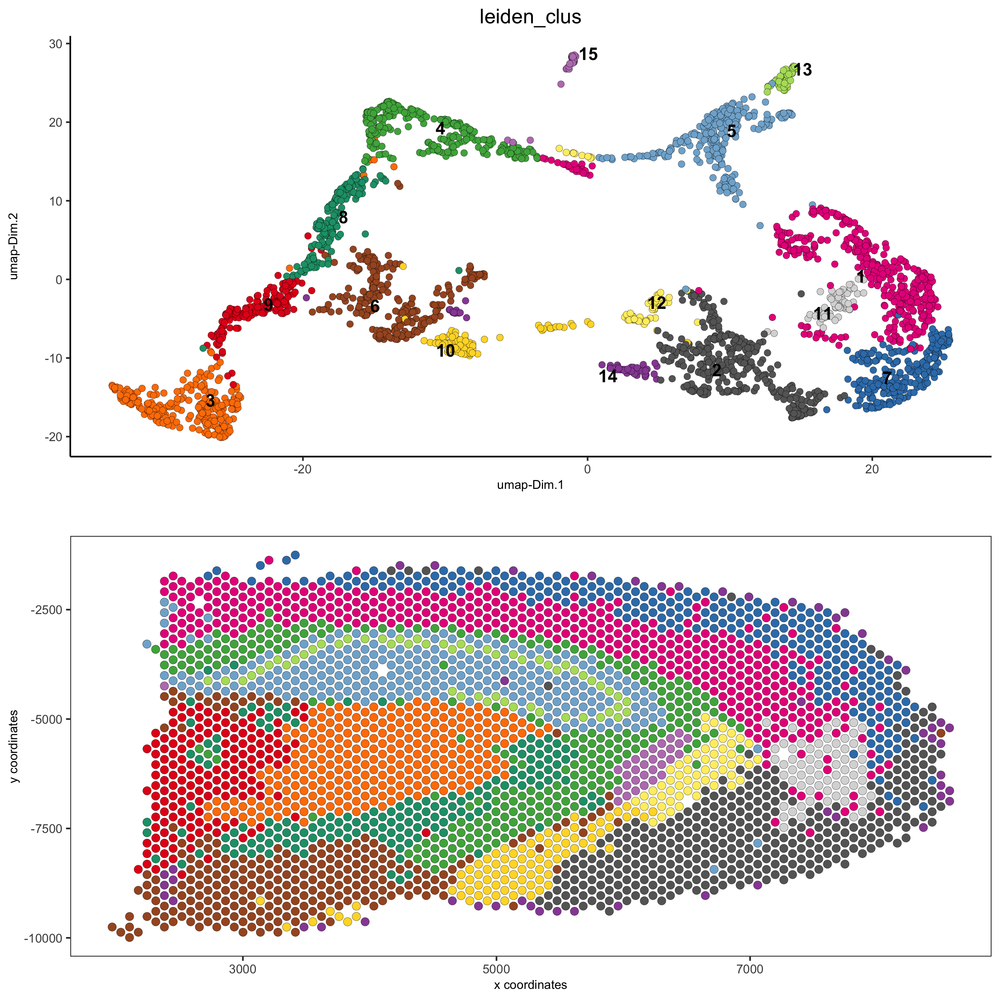
spatDimPlot(gobject = visium_brain, cell_color = 'nr_genes', color_as_factor = F, dim_point_size = 2, spat_point_size = 2.5, save_param = list(save_name = '5_b_nr_genes'))
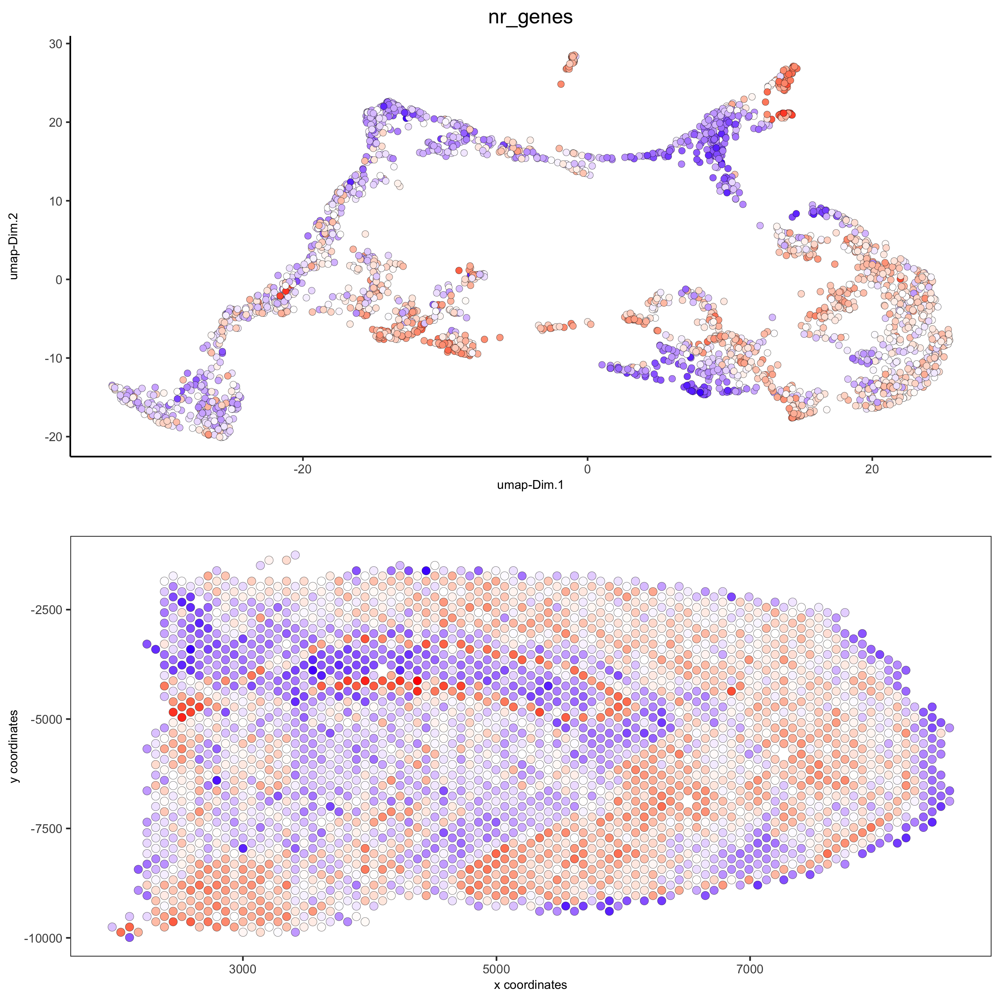
5.2 subset dataset on DG region
DG_subset = subsetGiottoLocs(visium_brain, x_max = 6500, x_min = 3000, y_max = -2500, y_min = -5500, return_gobject = TRUE) spatDimPlot(gobject = DG_subset, cell_color = 'leiden_clus', spat_point_size = 5, save_param = list(save_name = '5_c_DEG_subset'))
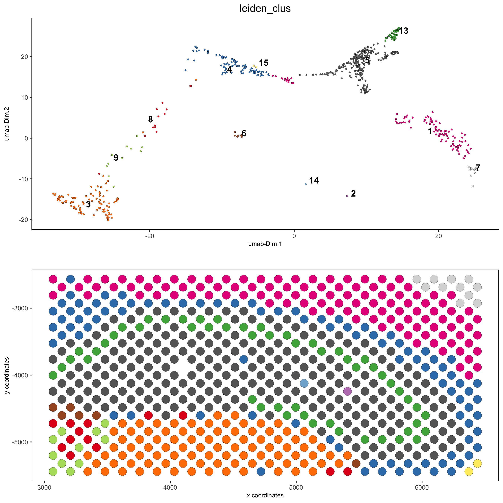
part 6: cell type marker gene detection
gini
gini_markers_subclusters = findMarkers_one_vs_all(gobject = visium_brain, method = 'gini', expression_values = 'normalized', cluster_column = 'leiden_clus', min_genes = 20, min_expr_gini_score = 0.5, min_det_gini_score = 0.5) topgenes_gini = gini_markers_subclusters[, head(.SD, 2), by = 'cluster']$genes # violinplot violinPlot(visium_brain, genes = unique(topgenes_gini), cluster_column = 'leiden_clus', strip_text = 8, strip_position = 'right', save_param = list(save_name = '6_a_violinplot_gini', base_width = 5, base_height = 10))

# cluster heatmap plotMetaDataHeatmap(visium_brain, selected_genes = topgenes_gini, metadata_cols = c('leiden_clus'), x_text_size = 10, y_text_size = 10, save_param = list(save_name = '6_b_metaheatmap_gini'))

# umap plots dimGenePlot2D(visium_brain, expression_values = 'scaled', genes = gini_markers_subclusters[, head(.SD, 1), by = 'cluster']$genes, cow_n_col = 3, point_size = 1, save_param = list(save_name = '6_c_gini_umap', base_width = 8, base_height = 5))
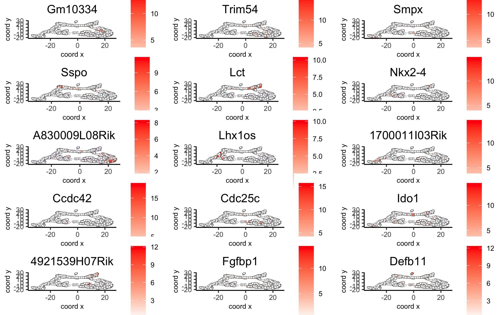
scran
scran_markers_subclusters = findMarkers_one_vs_all(gobject = visium_brain, method = 'scran', expression_values = 'normalized', cluster_column = 'leiden_clus') topgenes_scran = scran_markers_subclusters[, head(.SD, 2), by = 'cluster']$genes # violinplot violinPlot(visium_brain, genes = unique(topgenes_scran), cluster_column = 'leiden_clus', strip_text = 10, strip_position = 'right', save_param = list(save_name = '6_d_violinplot_scran', base_width = 5))
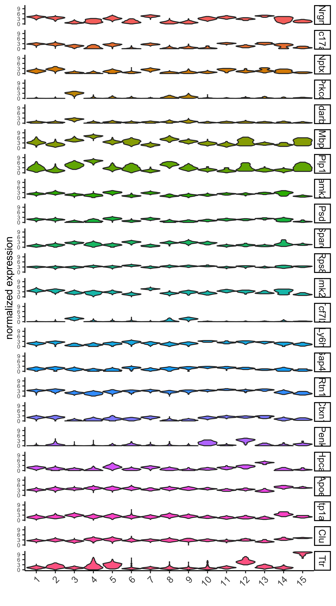
# cluster heatmap plotMetaDataHeatmap(visium_brain, selected_genes = topgenes_scran, metadata_cols = c('leiden_clus'), save_param = list(save_name = '6_e_metaheatmap_scran'))

# umap plots dimGenePlot(visium_brain, expression_values = 'scaled', genes = scran_markers_subclusters[, head(.SD, 1), by = 'cluster']$genes, cow_n_col = 3, point_size = 1, save_param = list(save_name = '6_f_scran_umap', base_width = 8, base_height = 5))
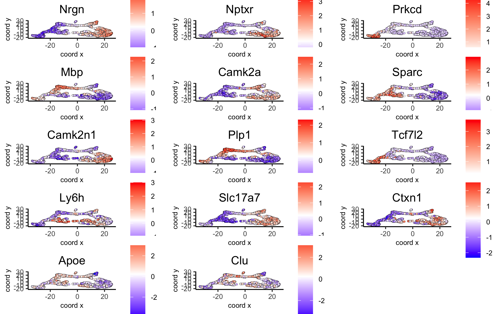
part 7: cell-type annotation
Visium spatial transcriptomics does not provide single-cell resolution, making cell type annotation a harder problem. Giotto provides 3 ways to calculate enrichment of specific cell-type signature gene list:
- PAGE
- rank
- hypergeometric test
# known markers for different mouse brain cell types: # Zeisel, A. et al. Molecular Architecture of the Mouse Nervous System. Cell 174, 999-1014.e22 (2018). ## cell type signatures ## ## combination of all marker genes identified in Zeisel et al sign_matrix_path = system.file("extdata", "sig_matrix.txt", package = 'Giotto') brain_sc_markers = data.table::fread(sign_matrix_path) sig_matrix = as.matrix(brain_sc_markers[,-1]); rownames(sig_matrix) = brain_sc_markers$Event ## enrichment tests visium_brain = createSpatialEnrich(visium_brain, sign_matrix = sig_matrix, enrich_method = 'PAGE') ## heatmap of enrichment versus annotation (e.g. clustering result) cell_types = colnames(sig_matrix) plotMetaDataCellsHeatmap(gobject = visium_brain, metadata_cols = 'leiden_clus', value_cols = cell_types,spat_enr_names = 'PAGE', x_text_size = 8, y_text_size = 8, save_param = list(save_name="7_a_metaheatmap"))
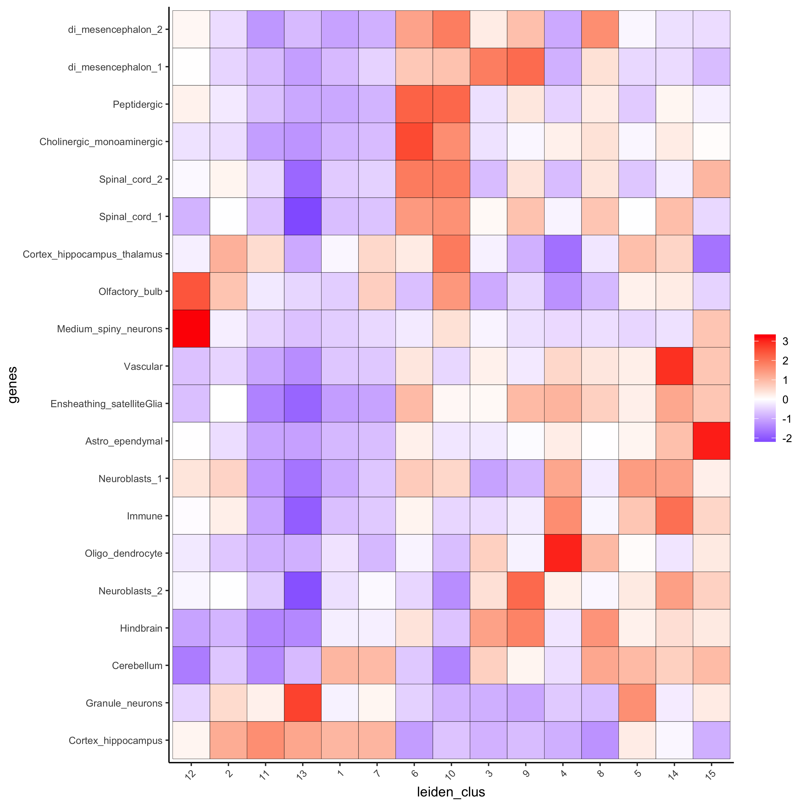
cell_types_subset = colnames(sig_matrix)[1:10] spatCellPlot(gobject = visium_brain, spat_enr_names = 'PAGE',cell_annotation_values = cell_types_subset, cow_n_col = 4,coord_fix_ratio = NULL, point_size = 0.75, save_param = list(save_name="7_b_spatcellplot_1"))
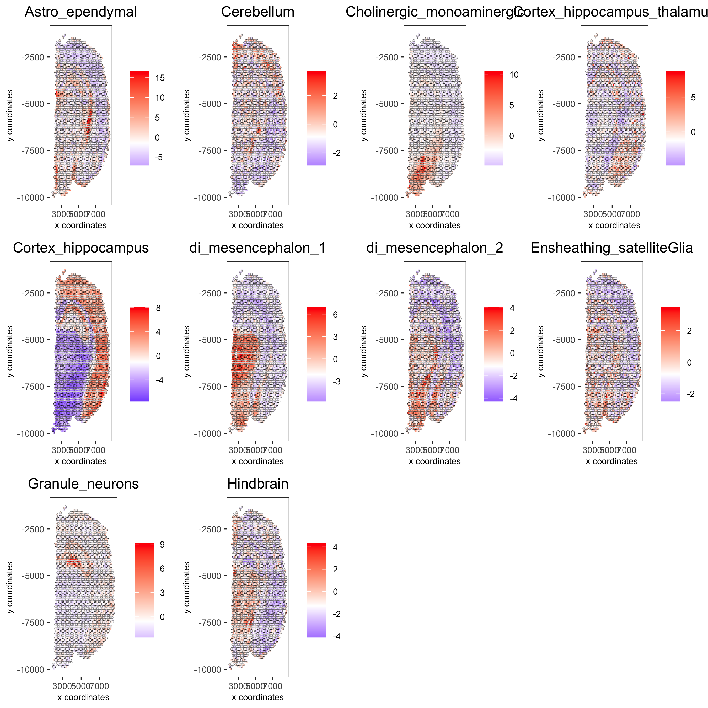
cell_types_subset = colnames(sig_matrix)[11:20] spatCellPlot(gobject = visium_brain, spat_enr_names = 'PAGE', cell_annotation_values = cell_types_subset, cow_n_col = 4, coord_fix_ratio = NULL, point_size = 0.75, save_param = list(save_name="7_c_spatcellplot_2"))
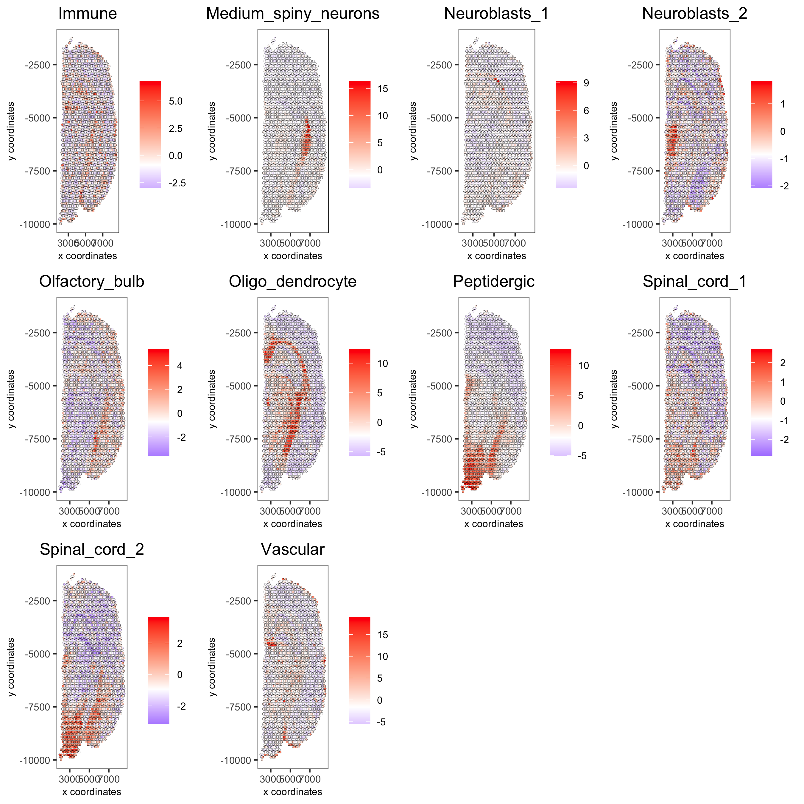
spatDimCellPlot(gobject = visium_brain, spat_enr_names = 'PAGE', cell_annotation_values = c('Cortex_hippocampus', 'Granule_neurons', 'di_mesencephalon_1', 'Oligo_dendrocyte','Vascular'), cow_n_col = 1, spat_point_size = 1, plot_alignment = 'horizontal', save_param = list(save_name="7_d_spatDimCellPlot", base_width=7, base_height=10))

part 8: spatial grid
visium_brain <- createSpatialGrid(gobject = visium_brain, sdimx_stepsize = 400, sdimy_stepsize = 400, minimum_padding = 0) spatPlot(visium_brain, cell_color = 'leiden_clus', show_grid = T, grid_color = 'red', spatial_grid_name = 'spatial_grid', save_param = list(save_name = '8_grid'))

part 9: spatial network
visium_brain <- createSpatialNetwork(gobject = visium_brain, method = 'kNN', k = 5, maximum_distance_knn = 400, name = 'spatial_network') showNetworks(visium_brain) spatPlot(gobject = visium_brain, show_network = T, network_color = 'blue', spatial_network_name = 'spatial_network', save_param = list(save_name = '9_a_knn_network'))
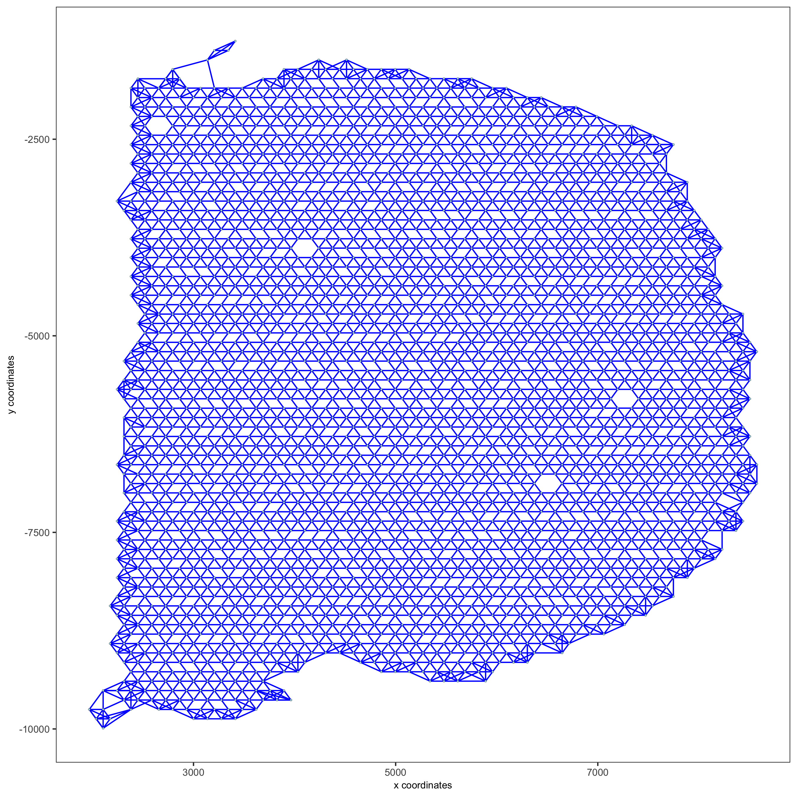
part 10: spatial genes
Spatial genes
## kmeans binarization kmtest = binSpect(visium_brain, calc_hub = T, hub_min_int = 5, spatial_network_name = 'spatial_network') spatGenePlot(visium_brain, expression_values = 'scaled', genes = kmtest$genes[1:6], cow_n_col = 2, point_size = 1.5, save_param = list(save_name = '10_a_spatial_genes_km'))

## rank binarization ranktest = binSpect(visium_brain, bin_method = 'rank', calc_hub = T, hub_min_int = 5, spatial_network_name = 'spatial_network') spatGenePlot(visium_brain, expression_values = 'scaled', genes = ranktest$genes[1:6], cow_n_col = 2, point_size = 1.5, save_param = list(save_name = '10_b_spatial_genes_rank'))

spatial_genes = silhouetteRankTest(gobject = visium_brain, expression_values = 'scaled', rbp_ps = c(0.95, 0.99), examine_tops = c(0.1, 0.3), parallel_path = "/usr/local/bin") spatGenePlot(visium_brain, expression_values = 'scaled', genes = spatial_genes$gene[1:6], cow_n_col = 2, point_size = 1, save_param = list(save_name = '10_c_silhouette'))

show top 90 genes identified by silhouetteRank:
spatGenePlot(visium_brain, expression_values = 'scaled', genes = spatial_genes$gene[1:30], cow_n_col = 6, point_size = 1, save_param = list(save_name="10_d_silhouette_1", base_width=20, base_height=10))

spatGenePlot(visium_brain, expression_values = 'scaled', genes = spatial_genes$gene[31:60], cow_n_col = 6, point_size = 1, save_param = list(save_name="10_d_silhouette_2", base_width=20, base_height=10))

spatGenePlot(visium_brain, expression_values = 'scaled', genes = spatial_genes$gene[61:90], cow_n_col = 6, point_size = 1, save_param = list(save_name="10_d_silhouette_3", base_width=20, base_height=10))

png(filename = paste0(results_folder,'/', '10_e_plot.png')) plot(x=seq(1, 14414), y=-log10(spatial_genes$pval), xlab="Rank of genes by spatial score", ylab="-log10Pvalue") abline(v=c(1500)) dev.off()
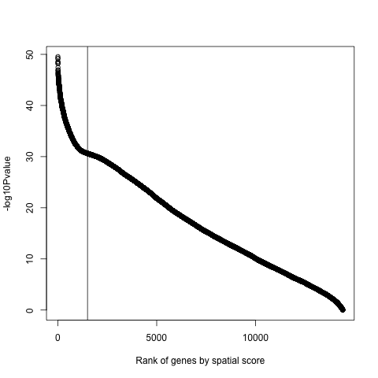
Spatial patterns
# cluster the top 1500 spatial genes into 20 clusters ext_spatial_genes = spatial_genes[1:1500,]$gene # here we use existing detectSpatialCorGenes function to calculate pairwise distances between genes (but set network_smoothing=0 to use default clustering) spat_cor_netw_DT = detectSpatialCorGenes(visium_brain, method = 'network', spatial_network_name = 'spatial_network', subset_genes = ext_spatial_genes, network_smoothing=0) # cluster spatial genes spat_cor_netw_DT = clusterSpatialCorGenes(spat_cor_netw_DT, name = 'spat_netw_clus', k = 20) # visualize clusters heatmSpatialCorGenes(visium_brain, spatCorObject = spat_cor_netw_DT, use_clus_name = 'spat_netw_clus', heatmap_legend_param = list(title = NULL), save_param = list(save_name="10_e_heatmap"))

# sample the spatial genes at a per cluster basis # but different from regular sampling, sampling is based on cluster size # controlled by sample_rate (between 1 to 10. 1 means equal number per cluster, 10 means number of samples is directly proportional to cluster size) # target number of spatial genes = 500 # extract cluster information clusters = spat_cor_netw_DT$cor_clusters clust = clusters$spat_netw_clus sample_rate=2 target=500 tot=0 num_cluster=20 gene_list = list() for(i in seq(1, num_cluster)){ gene_list[[i]] = colnames(t(clust[which(clust==i)])) } for(i in seq(1, num_cluster)){ num_g=length(gene_list[[i]]) tot = tot+num_g/(num_g^(1/sample_rate)) } factor=target/tot num_sample=c() for(i in seq(1, num_cluster)){ num_g=length(gene_list[[i]]) num_sample[i] = round(num_g/(num_g^(1/sample_rate)) * factor) } set.seed(10) samples=list() union_genes = c() for(i in seq(1, num_cluster)){ if(length(gene_list[[i]])<num_sample[i]){ samples[[i]] = gene_list[[i]] }else{ samples[[i]] = sample(gene_list[[i]], num_sample[i]) } union_genes = union(union_genes, samples[[i]]) } union_genes = unique(union_genes)
# do HMRF with different betas on 500 spatial genes my_spatial_genes <- union_genes hmrf_folder = paste0(results_folder,'/','11_HMRF/') if(!file.exists(hmrf_folder)) dir.create(hmrf_folder, recursive = T) HMRF_spatial_genes = doHMRF(gobject = visium_brain, expression_values = 'scaled', spatial_genes = my_spatial_genes, k = 20, spatial_network_name="spatial_network", betas = c(0, 10, 5), output_folder = paste0(hmrf_folder, '/', 'Spatial_genes/SG_topgenes_k20_scaled')) visium_brain = addHMRF(gobject = visium_brain, HMRFoutput = HMRF_spatial_genes, k = 20, betas_to_add = c(0, 10, 20, 30, 40), hmrf_name = 'HMRF') spatPlot(gobject = visium_brain, cell_color = 'HMRF_k20_b.40', point_size = 2, save_param=c(save_name="10_d_spatPlot2D_HMRF"))
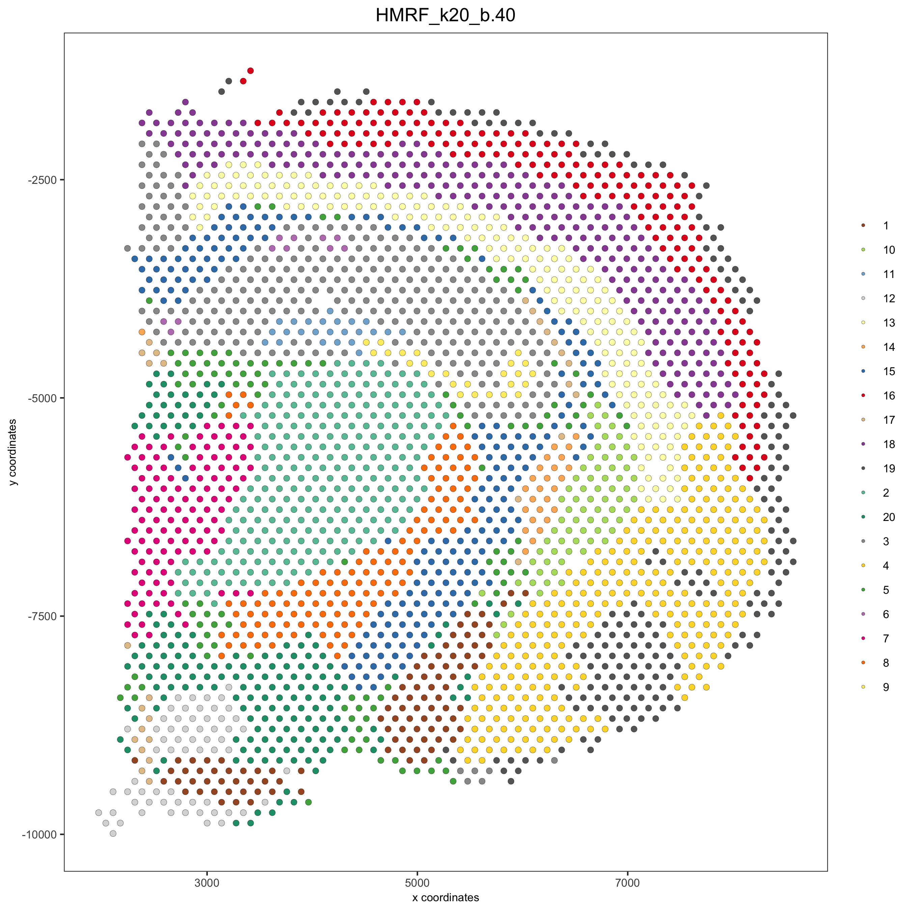
Export and create Giotto Viewer
# check which annotations are available combineMetadata(visium_brain, spat_enr_names = 'PAGE') # select annotations, reductions and expression values to view in Giotto Viewer viewer_folder = paste0(results_folder, '/', 'mouse_Visium_brain_viewer') exportGiottoViewer(gobject = visium_brain, output_directory = viewer_folder, spat_enr_names = 'PAGE', factor_annotations = c('in_tissue', 'leiden_clus', 'HMRF_k20_b.40'), numeric_annotations = c('nr_genes', 'clus_25'), dim_reductions = c('tsne', 'umap'), dim_reduction_names = c('tsne', 'umap'), expression_values = 'scaled', expression_rounding = 2, overwrite_dir = T)